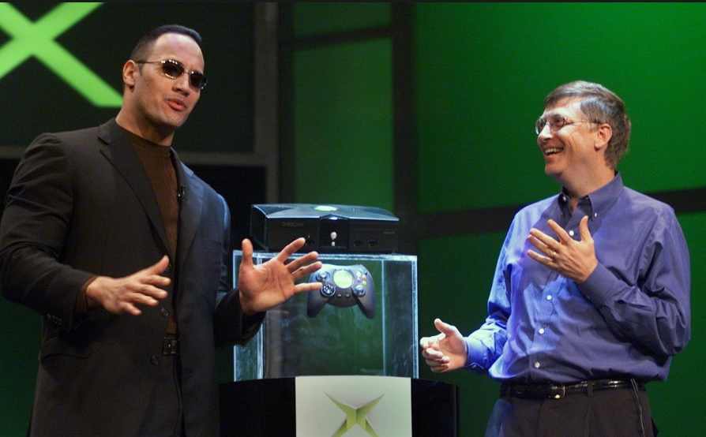
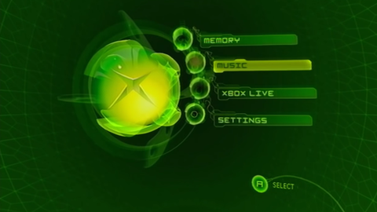

.jpg)
Conhecendo mais sobre o console
Antes do lançamento do primeiro Xbox, em novembro de 2001, a Microsoft já havia começado a explorar o mercado de jogos, publicando títulos para PC, como o Flight Simulator e o Age of Empires. Entretanto, reconhecendo a crescente importância dos videogames e a concorrência significativa, especialmente com a Sony estabelecendo uma forte presença com o PlayStation e trabalhando no desenvolvimento do PS2, a Microsoft percebeu a necessidade de melhorias para ter sucesso nesse mercado. Assim, surgiu o primeiro Xbox, equipado com 64 MB de RAM e 8 GB de armazenamento. O nome "Xbox" originou-se de "DirectX Box", e inicialmente, no início de seu desenvolvimento em 1998, o console foi concebido para funcionar de maneira semelhante a um PC rodando Windows 2000. Isso visava facilitar a vida dos desenvolvedores de conteúdo, que já estavam familiarizados com o sistema operacional Windows.

Como foi o lançamento e a sua trajetória
Três anos após seu desenvolvimento, Bill Gates apresentou o Xbox ao mundo ao lado do ator Dwayne Johnson, conhecido como "The Rock". O console vendeu mais de 1 milhão de unidades nas primeiras três semanas. Considerado mais poderoso que seus concorrentes, GameCube e PS2, o Xbox teve uma vida comercial bem-sucedida, vendendo mais de 24 milhões de unidades globalmente. Embora tenha superado o GameCube e o Dreamcast, ficou atrás do PlayStation 2, que vendeu mais de 155 milhões de unidades, mantendo o título de console mais vendido. Apesar das dificuldades no mercado japonês, onde vendeu cerca de meio milhão de unidades, o Xbox se destacou como o preferido para jogos ocidentais, especialmente de ação e tiro em primeira pessoa.

Controle Duke e controle "S"
O Xbox Controller, também conhecido na época como “Duke”, tinha um design bem robusto e não era lá muito confortável de usar por longas horas. Felizmente, não demorou muito para ele ser substituído por uma versão leve, o “Controller S” que serviu de inspiração para os controles seguintes.

Xbox Live
O Xbox foi o primeiro console a dar suporte a uma porta Ethernet de banda larga, o que abriu caminho para a estreia (em 2002) da Xbox Live, um serviço de assinatura para acessar jogos online entre outros recursos. A Xbox Live ganhou popularidade com Halo 2 e atingiu o auge, naquela geração, com cerca de 20 milhões de usuários.
Alguns Jogos que marcaram o game
O lançamento de Halo, em novembro de 2001, foi um grande sucesso para o Xbox, destacando o console no mercado de jogos. A Microsoft adquiriu a desenvolvedora Bungie para criar este título exclusivo, o que se mostrou uma decisão acertada. Além de Halo, outros jogos marcantes como Fable, Forza Motorsport, Ninja Gaiden, Star Wars: Knights of the Old Republic, Tom Clancy’s Splinter Cell e Burnout 3: Takedown também contribuíram para o sucesso do Xbox e sua popularidade entre os jogadores.
.jpg)
.jpg)
.jpg)
Comparações de Hardware com os consoles da mesma geração
| CPU | GPU | RAM | Fabricante | |
|---|---|---|---|---|
| Xbox | 733 MHz x86 Intel Celeron | 233 MHz Custom Nvidia | 64 MB DDR | Microsoft |
| GameCube | 485 MHz PowerPC | 162 MHz ATI "Flipper" | Main RAM 24 MB | Video RAM 3 MB | Nintendo |
| PlayStation 2 | 294 MHz MIPS | 147 MHz "Graphics Synthesizer" | Main RAM 32 MB | Video RAM 4 MB | Sony |
| Dreamcast | 200 MHz SuperH SH-4 | 100 MHz NEC/VideoLogic | Main RAM 16 MB | Video RAM 8 MB | Sound RAM 2 MB | Sega |